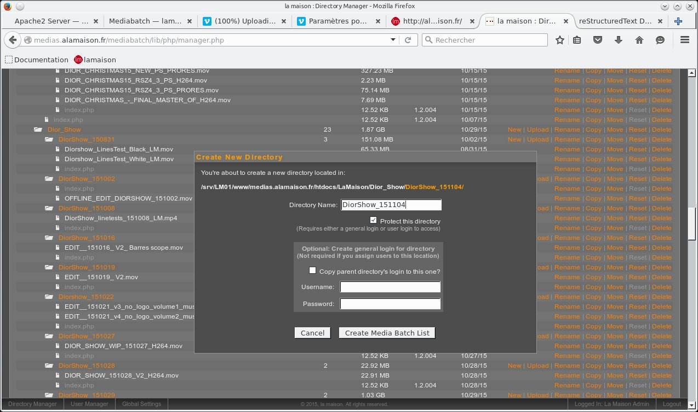
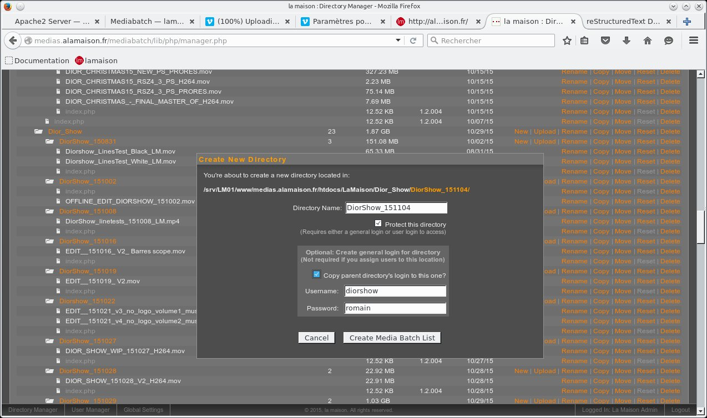

Mediabatch¶
{kind=link}
{kind=link}
nommer le dossier a la date du jour¶
attention : toujours ajouter le nom du projet dans le nom du sous dossier : PROJET_datedujour
{kind=link}
héritage des mots de passe¶
le nouveau dossier héritera ainsi des login/motdepasse du dossier parent
{kind=link}
et voila.pour transférer les fichiers dans le nouveau dossier utiliser de préferences Filezilla : client ftp
Nota¶
la création d’un dossier ou sous-dossier doit impérativement ètre fait dans Mediabatch pour que le fichier index.php existe dans le dossier . Ne pas créer de dossiers directement dans Filezilla , il ne seront pas reconnu par Mediabatch.
Problèmes fréquents¶
l’experience nous a appris qu’il y a quelques erreurs fréquentes :
- noms de sous dossiers identiques dans des projets différents : toujours ajouter le nom du projet avant la datedujour , sinon les mots de passe ne sont plus correctement gérés.
mauvais
-DIOR
-151022
-INSONDABLES
-151022
correct
-DIOR
-Dior_151022
-INSONDABLES
-Insondables_151022
- dossiers n’ayant pas de fichiers “index.php” présents , en général créés ailleurs que dans l’interface de Mediabatch.Les dossiers n’apparaisent pas dans Mediabatch si ce fichier manque.
- site distant plein : notre site distant a une taille limitée (30Gigas).Si le site est plein , les transferts sont interompus et corrompus.il faut alors faire le ménage dans le Directory Manager ou dans Filezilla.On peut connaitre la taille totale occupée en repliant tous les dossiers dans le FileManager de Mediabatch et en additionant les sizes des dossiers racines (ici Calm , LaMaison , prod).
{kind=link}